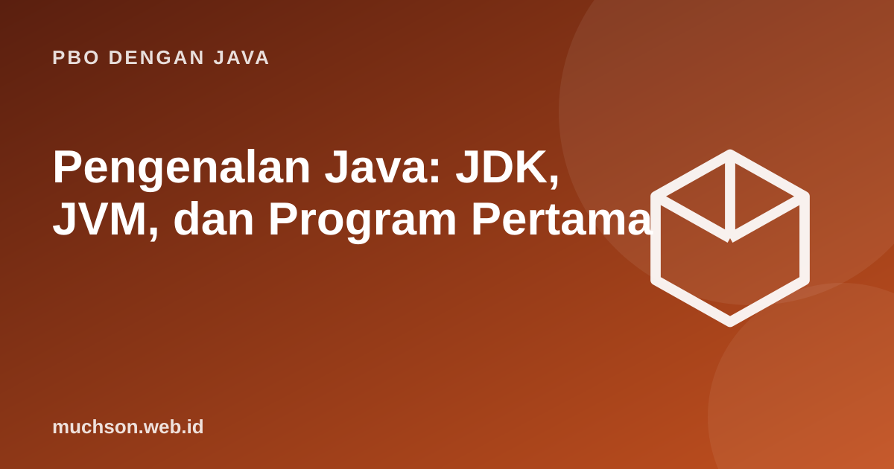

Beranda › Artikel › PBO dengan Java
PBO dengan JavaPengenalan Java: JDK, JVM, dan Program Pertama
Java adalah bahasa berorientasi objek yang dikompilasi menjadi bytecode dan dijalankan oleh Java Virtual Machine. Slogan lamanya, "tulis sekali, jalankan di mana saja", berasal dari rancangan itu. Materi ini mengurai bagian-bagiannya agar Anda paham apa yang terjadi saat menekan Run.
Sebaiknya sudah paham: dasar menggunakan komputer

Setelah membaca dan mencoba materi ini, Anda mampu:
- membedakan JDK, JRE, dan JVM
- menjelaskan alur dari kode sumber .java ke bytecode .class sampai berjalan
- menulis, mengompilasi, dan menjalankan program Java sederhana
- membaca pesan error kompilasi dan runtime
- menjelaskan unsur dasar struktur program: class, method main, statement
Dari kode sumber sampai berjalan
| Istilah | Isi | Untuk siapa |
|---|---|---|
| JVM | Mesin virtual yang menjalankan bytecode | Dipakai saat program berjalan |
| JRE | JVM + pustaka kelas standar | Pengguna yang hanya menjalankan |
| JDK | JRE + alat pengembang (javac, jar, jshell, dan lainnya) | Pengembang |
Sejak Java 11 Oracle tidak lagi menyediakan paket JRE terpisah untuk umum. Yang Anda pasang untuk belajar adalah JDK (misalnya OpenJDK atau Temurin).
Program pertama
public class Main {
public static void main(String[] args) {
System.out.println("Halo, dunia!");
}
}Halo, dunia!
Menjalankan dari terminal
javac Main.java # menghasilkan Main.class
java Main # menjalankan JVM dengan class Main
# sejak Java 11, berkas tunggal bisa langsung dijalankan:
java Main.javaMembaca pesan error
Ada dua jenis kesalahan utama. Kesalahan kompilasi terdeteksi sebelum program berjalan (salah sintaks, tipe tidak cocok). Kesalahan runtime baru muncul saat program berjalan (misalnya pembagian dengan nol).
public class Main {
public static void main(String[] args) {
int a = 10;
int b = 0;
System.out.println("Sebelum pembagian");
System.out.println(a / b);
}
}Sebelum pembagian
Exception in thread "main" java.lang.ArithmeticException: / by zero
at Main.main(Main.java:6)
Kesalahan kompilasi seperti titik koma hilang atau variabel belum dideklarasikan ditolak oleh javac dan tidak pernah sampai berjalan. Itu keunggulan bahasa bertipe statis: banyak kesalahan tertangkap lebih awal.
Mengapa Java masih dipakai
- Ekosistem matang: pustaka dan kerangka kerja (Spring, Jakarta EE) untuk sistem perusahaan, perbankan, dan telekomunikasi.
- Android: Java dan Kotlin berjalan di JVM; banyak kode lama masih Java.
- Performa: JIT compiler mengoptimalkan kode panas saat berjalan.
- Tooling: IDE kuat (IntelliJ IDEA, Eclipse, NetBeans, VS Code) dan alat build (Maven, Gradle).
- Cocok untuk belajar PBO: sintaks eksplisit memaksa kita memikirkan tipe dan desain kelas.
1. Ubah program agar mencetak nama Anda dan jurusan pada dua baris.
2. Apa bedanya print dan println?
3. Apa yang terjadi bila nama class berbeda dengan nama berkas pada class public?
4. Mengapa kita bisa menjalankan bytecode yang sama pada sistem operasi berbeda?
- JDK = alat pengembang + JRE; JRE = JVM + pustaka; JVM menjalankan bytecode.
- Alur: .java → javac → .class → JVM.
- Program Java berada dalam class; main adalah titik masuk.
- Kesalahan kompilasi dicegat lebih awal, kesalahan runtime muncul sebagai exception.
Tanya jawab
Versi Java mana yang sebaiknya dipasang?
Apakah Java sama dengan JavaScript?
Apakah harus memakai IDE?
Referensi
- Oracle: The Java Tutorials
- dev.java: Learn Java (Oracle)
- The Java Language Specification
- Sedgewick dan Wayne, Introduction to Programming in Java